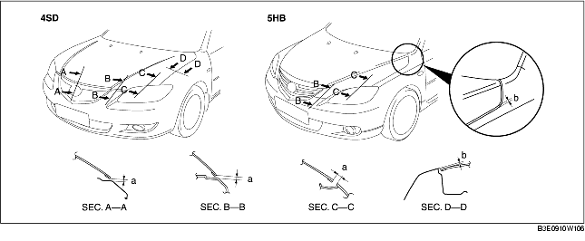

AJUSTE CAPO
B3E091056601W02
Alineación horizontal
1. Quitar los siguientes componentes:
-
(1) Indicadores de dirección delanteros (Véase REMOCION/INSTALACION INDICADOR DE DIRECCION DELANTERO LATERAL).
-
(2) Parachoques delantero (Véase REMOCION/INSTALACION PARACHOQUES DELANTEROS).
-
(3) Grupo óptico trasero (Véase REMOCION/INSTALACION GRUPO OPTICO DELANTERO).
-
(4) Panel guardabarros delantero (Véase REMOCION/INSTALACION PANEL GUARDABARROS DELANTERO).
2. Aflojar los pernos de fijación de la bisagra del capó y ajustar el capó.
3. Apretar los pernos fileteados.
4. Comprobar que la distancia entre capó y carrocería sea de conformidad con las especificaciones.
-
Juego estándar
-
a: 0,2-3,8 mm (0,0079-0,14 in)
-
b: -1,0-3,0 mm (-0,039-0,11 in) (4SD)
-
b: -1,5-2,5 mm (-0,059-0,098 in) (5HB)
-
c: -0,5-2,5 mm (-0,019-0,098 in) (4SD)
-
c: -1,0-2,0 mm (-0,039-0,078 in) (5HB)
-
d: 2,5-4,5 mm (0,10-0,17 in)
Ajuste diferencia vertical
1. Ajustar la altura del capó mediante los tampones de caucho.
2. Comprobar que la diferencia de altura entre capó y carrocería sea de conformidad a las especificaciones.

-
Juego estándar
-
a: 3,0-6,0 mm (0,12-0,23 in)
-
b: -1,5-0,5 mm (-0,059-0,019 in)
-
c: -1,0-1,0 mm (-0,39-0,39 in)